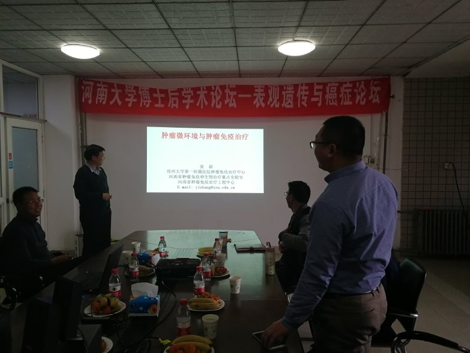

2月9日下午 河南省特聘教授、郑州大学第一附属医院细胞治疗中心主任张教授毅，河南省学术技术带头人、郑州大学生命科学学院副院长张守涛教授做客河南大学博士后学术论坛-表观遗传与癌症论坛，在植物逆境楼6楼会议室分别做了“肿瘤微环境和肿瘤免疫治疗”、“PEG修饰抗体Fab药物研究进展”的报告。基础医学院、生命科学学院以及药学院的青年教师、博士、硕士到场聆听。
论坛伊始，张毅教授结合自己的研究内容，为大家详细介绍了肿瘤微环境和免疫治疗的背景，重点介绍了TCR基因修饰T细胞抗肿瘤免疫机制及从临床应用角度阐述肿瘤免疫治疗。 他认为TCR转基因T细胞治疗肿瘤的技术几经在黑色素瘤、滑膜细胞肉瘤、食管癌、胆管癌、骨髓瘤以及结直肠癌等肿瘤中应用，取得了较好的临床效果，但也有TCR转基因T细胞识别广泛表达的抗原问题以及交叉识别抗原问题。今后的研究重点要集中在靶抗原的选择、TCR的亲和性、克服单靶点识别脱靶以及肿瘤微环境免疫抑制等问题。
张守涛教授从Fab抗体类药物的发展历程及目前的研究现状讲起，深入剖析目前市场上Fab抗体药物的发展方向，并详细讲述其实验室在Fab抗体药物研发中取得的突破性研究进展。同时，张教授对诱导多能干细胞在肿瘤治疗中的应用进行深入剖析，并详细讲述其课题组在模式生物涡虫及小鼠中对ips研究取得的一系列进展。本次讲座条理清晰，富有深度而且紧跟学术前沿，拓宽了师生的学术视野。
